わしのあとについてくるんや〜 [梅吉]
おとーさんに熱い視線を送る梅吉さん。

ちょっとでも立ち上がる気配を見せようものなら
![[猫]](https://blog.ss-blog.jp/_images_e/101.gif) さっ、こっちやで
さっ、こっちやで![[黒ハート]](https://blog.ss-blog.jp/_images_e/136.gif)
ささっとベランダへ出るドアの方に移動。
ここをあけてわしのあとについてくるんや〜

なにやってるんや〜
ちゃっちゃとついてきてや〜
ものすごい催促をされます^^;
知らんぷりをしていると近くまで迎えにきてまたドアの方に誘導するという・・・
ちなみに私は誘われません。
おかーさんは付き合ってくれないとちゃんとわかっています。
日焼けしたくないからね〜。
ベランダに出ると花鉢の間の定位置へ。
こんな風にベランダで気持ちよく過ごせるのもあと少しの間でしょうか。
来週あたりから雨が降り始めそう・・・
それが過ぎたら日向のベランダには暑くていられません。
･゜ﾟ･*:.｡..｡.:*･゜ﾟ･*:.｡. .｡.:*･゜ﾟ･*･゜ﾟ･*:.｡..｡.:*･゜ﾟ･*:.｡..｡.:*･゜ﾟ･* ･゜ﾟ･*:.｡..｡.:*･゜ﾟ･*:.｡. .｡.:*･゜ﾟ･*･゜ﾟ･

ローソンのUchi Cafe SweetsとGODIVA の共同開発のショコラロールケーキ。
売り切れ続出！というネットニュースを見ましたが近くのローソンでは沢山置いていました。
しかも消費期限一日前なので20円引き＾＾

GODIVAの味だよね！とは思いませんでしたが美味しかったで〜す。
濃いめのコーヒーによく合います。
 ↑ガブッと一押し↑
↑ガブッと一押し↑

ちょっとでも立ち上がる気配を見せようものなら
ささっとベランダへ出るドアの方に移動。

ちゃっちゃとついてきてや〜
ものすごい催促をされます^^;
知らんぷりをしていると近くまで迎えにきてまたドアの方に誘導するという・・・
ちなみに私は誘われません。
おかーさんは付き合ってくれないとちゃんとわかっています。
日焼けしたくないからね〜。
ベランダに出ると花鉢の間の定位置へ。
こんな風にベランダで気持ちよく過ごせるのもあと少しの間でしょうか。
来週あたりから雨が降り始めそう・・・
それが過ぎたら日向のベランダには暑くていられません。
･゜ﾟ･*:.｡..｡.:*･゜ﾟ･*:.｡. .｡.:*･゜ﾟ･*･゜ﾟ･*:.｡..｡.:*･゜ﾟ･*:.｡..｡.:*･゜ﾟ･* ･゜ﾟ･*:.｡..｡.:*･゜ﾟ･*:.｡. .｡.:*･゜ﾟ･*･゜ﾟ･

ローソンのUchi Cafe SweetsとGODIVA の共同開発のショコラロールケーキ。
売り切れ続出！というネットニュースを見ましたが近くのローソンでは沢山置いていました。
しかも消費期限一日前なので20円引き＾＾

GODIVAの味だよね！とは思いませんでしたが美味しかったで〜す。
濃いめのコーヒーによく合います。
常設決定！ [梅吉]
〜カレンダーコンテストの梅吉の写真に投票していただいた皆様！
投票したかったけど押せなかった〜の皆様！お心遣い本当にありがとうございましたm(_ _)m〜
手入れをして仕舞おうと思っていたサークル、本当に気に入ってしまいました・・・涙

形が変形してたって倒れてたって気にしな〜い！
むしろ目新しい趣向に楽しそうに絡んできます。

のれんはなくてもええで。
キバを出しながらニオイのチェック。
ブサ顔ですが満足そうww

ぐぎぎぎぎぎぎ〜っとマーキング。

楽しくて真剣な時ほどコワイ顔になるのは梅吉だけなんでしょうか！？
もう仕舞うの諦めました。あははははははは・・・・・はぁ〜![[もうやだ～（悲しい顔）]](https://blog.ss-blog.jp/_images_e/143.gif)
このサークル、拭いて風を当てる他にもう一つ手をかけたいことがありました。
マジックテープで止めるようになっていた本体と底。
梅吉がマジックテープを剥がしてイリュージョン脱走するのでガムテープで止めていたら・・・
べっとべとやん！
そのべとべとを取るべく色々ネットで調べたらハンドクリームが良いとのこと。
やって見たら本当に取れるんですね〜。びっくりです。
↑ガブッと一押し↑
投票したかったけど押せなかった〜の皆様！お心遣い本当にありがとうございましたm(_ _)m〜
手入れをして仕舞おうと思っていたサークル、本当に気に入ってしまいました・・・涙

形が変形してたって倒れてたって気にしな〜い！
むしろ目新しい趣向に楽しそうに絡んできます。

キバを出しながらニオイのチェック。
ブサ顔ですが満足そうww

ぐぎぎぎぎぎぎ〜っとマーキング。

楽しくて真剣な時ほどコワイ顔になるのは梅吉だけなんでしょうか！？
もう仕舞うの諦めました。あははははははは・・・・・はぁ〜
このサークル、拭いて風を当てる他にもう一つ手をかけたいことがありました。
マジックテープで止めるようになっていた本体と底。
梅吉がマジックテープを剥がしてイリュージョン脱走するのでガムテープで止めていたら・・・
べっとべとやん！
そのべとべとを取るべく色々ネットで調べたらハンドクリームが良いとのこと。
やって見たら本当に取れるんですね〜。びっくりです。
おやつがあれば大丈夫 [梅吉]
夕食時、ついつい我を忘れて食卓テーブルに飛び乗った梅吉さん。
怒られて拗ねて寝ちゃった？
でも耳の角度がね、寝ている耳じゃないですよね〜。
近づいてみると

目、開いてるし！

全然寝てません。耳はおとーさんとおかーさんの行動をチェックしている様子。
食事が終わってテーブルの上を片付け始めると・・・
ん？何かの気配を察した？
梅吉用に取っておいた小さなお皿が冷蔵庫から出て来る気配を感じると
シャキーン！！
わしのでばんやなっ！！！
さっきまで拗ねていたのが嘘のような変わり身です(^▽^;)
食べ物で機嫌がなおる子ww

おいちいお肉当たりました。
どんなにこっそり行動しても何かもらえる気配はものすごく敏感に察知します。
動物的勘？それとも人間の話している言葉わかっている？？
↑ガブッと一押し↑
怒られて拗ねて寝ちゃった？
でも耳の角度がね、寝ている耳じゃないですよね〜。
近づいてみると

目、開いてるし！

全然寝てません。耳はおとーさんとおかーさんの行動をチェックしている様子。
食事が終わってテーブルの上を片付け始めると・・・
ん？何かの気配を察した？
梅吉用に取っておいた小さなお皿が冷蔵庫から出て来る気配を感じると
シャキーン！！
さっきまで拗ねていたのが嘘のような変わり身です(^▽^;)
食べ物で機嫌がなおる子ww

おいちいお肉当たりました。
どんなにこっそり行動しても何かもらえる気配はものすごく敏感に察知します。
動物的勘？それとも人間の話している言葉わかっている？？
決定的瞬間を逃しまくる [梅吉]
ず〜っと狙い続けているのになかなか撮れない瞬間。それは・・・

梅吉がプッシュ式のゴミ箱を開ける瞬間。
本体と違う色の部分を押せば開く、を理解しています。
普段は「こら〜〜〜っ！」と怒られるので
はっ！みつかってしもたっ！！
という顔でやめちゃいました。
おかーさんの都合の良い時だけなんて出来ないよねー。
偉い、偉いですよ・・・（でも残念・・・
そしてもう一つの瞬間が

後ろ足のび〜。
以前は片足ぴーんで終わっていたのですが
最近は両後ろ足の肉球をきっちり上に向けてフィニッシュする様になりました。
この写真も決定的瞬間を逃して終わってます。
となかなか撮れない決定的瞬間ですが
こっちの世界とあっちの世界を白目で彷徨う梅吉の動画が撮れました！
これを決定的瞬間と思うのは飼い主だけかもしれませんが・・・ (^▽^;)
↑ガブッと一押し↑

梅吉がプッシュ式のゴミ箱を開ける瞬間。
本体と違う色の部分を押せば開く、を理解しています。
普段は「こら〜〜〜っ！」と怒られるので
という顔でやめちゃいました。
おかーさんの都合の良い時だけなんて出来ないよねー。
偉い、偉いですよ・・・（でも残念・・・
そしてもう一つの瞬間が

後ろ足のび〜。
以前は片足ぴーんで終わっていたのですが
最近は両後ろ足の肉球をきっちり上に向けてフィニッシュする様になりました。
この写真も決定的瞬間を逃して終わってます。
となかなか撮れない決定的瞬間ですが
こっちの世界とあっちの世界を白目で彷徨う梅吉の動画が撮れました！
これを決定的瞬間と思うのは飼い主だけかもしれませんが・・・ (^▽^;)
片付けたいのですが・・・ [梅吉]
ちょっとお手入れしておこうと
梅吉が我が家にやって来た頃に使っていた折りたたみ式のサークルを広げました。

チェックを怠らない梅吉さん。ちゃんと中に入って安全確認。

それは使い方が違いますよー！！天井の強度は確かめなくて結構。

でも、下からの眺めはなかなかですよ。
網目にくいこむ肉球！きゃーーーＯ(≧▽≦)Ｏ
（画像クリックすると拡大します）

入口ののれんはちゃんとお手手を使って開けるんですね。
居酒屋さんの空席を確かめてるみたいでいいですよ〜。
ママ〜、わしのせきある？
今日はあかんわー、帰ってんか？

え〜〜〜っ！そんなこといわんといて〜
拭いて風に当て仕舞おうと思っていたのにすっかり気に入って中に入り浸っています。
天井のネット部分を使ってとっても楽しそうに遊びだすし・・・・
（16秒です。）
あのー、片付けて良いですか？

わし、ここでくらす！！！
このサークルを使っていたのは梅吉が我が家に来てから一週間くらい。
日中家を空ける時と夜寝るときに使っていたのですが・・・
家を出る時サークルの中に入っていたはずの梅吉が帰宅すると玄関にいる。
底と本体をマジックテープで止めるようになっているのですが隙間から抜け出るようです。
隙間をテープで止めたりしたのですが執念で剥がして出てくる(=_=;)
夜はこのサークルの中で寝かせたのは二日くらい。
寂しがって わーわー、ガサガサするのでフリーにしたら
特にいたずらすることもなく一緒にお布団で寝るようになりました。
以来ず〜っと使っていなかったのですが災害時に必要かもね、とお手入れしたのですけど・・・
仕舞えなくなっちゃいました（泣）
↑ガブッと一押し↑
梅吉が我が家にやって来た頃に使っていた折りたたみ式のサークルを広げました。

チェックを怠らない梅吉さん。ちゃんと中に入って安全確認。

それは使い方が違いますよー！！天井の強度は確かめなくて結構。

でも、下からの眺めはなかなかですよ。
網目にくいこむ肉球！きゃーーーＯ(≧▽≦)Ｏ
（画像クリックすると拡大します）

入口ののれんはちゃんとお手手を使って開けるんですね。
居酒屋さんの空席を確かめてるみたいでいいですよ〜。
今日はあかんわー、帰ってんか？

拭いて風に当て仕舞おうと思っていたのにすっかり気に入って中に入り浸っています。
天井のネット部分を使ってとっても楽しそうに遊びだすし・・・・
（16秒です。）
あのー、片付けて良いですか？

このサークルを使っていたのは梅吉が我が家に来てから一週間くらい。
日中家を空ける時と夜寝るときに使っていたのですが・・・
家を出る時サークルの中に入っていたはずの梅吉が帰宅すると玄関にいる。
底と本体をマジックテープで止めるようになっているのですが隙間から抜け出るようです。
隙間をテープで止めたりしたのですが執念で剥がして出てくる(=_=;)
夜はこのサークルの中で寝かせたのは二日くらい。
寂しがって わーわー、ガサガサするのでフリーにしたら
特にいたずらすることもなく一緒にお布団で寝るようになりました。
以来ず〜っと使っていなかったのですが災害時に必要かもね、とお手入れしたのですけど・・・
仕舞えなくなっちゃいました（泣）
昼下がりの毛づくろい [梅吉]
食事時以外は乗ってもOKの食卓テーブルで毛づくろいを始める梅吉さん。

V字開脚で柔軟性を見せつけつつ後ろ足をべろべろべろべろ・・・
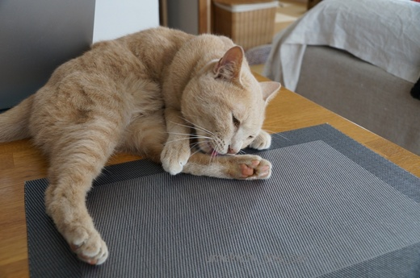
なんだか美味しそうだよね〜
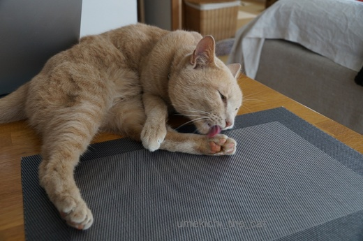
肉球も愛おしげにお手入れ。

わ〜！白目になってますよ〜！！
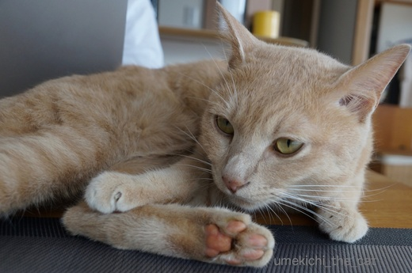
ふうっ、にくきゅうもきれいになったし
おひるねたいむやな。

先日はエアコンを初稼働。店先には水ナス、鮎、鱧が並び始めました。夏！夏！
梅吉の寝場所も毛布の上からテーブル、キッチンカウンターの上、フローリングに変わり始めました。
そして何と言っても夏は白目の季節！
暑くなると梅吉の白目率がぐんと上昇します。
白目好きの皆様どうぞお楽しみに〜＾＾
↑ガブッと一押し↑

V字開脚で柔軟性を見せつけつつ後ろ足をべろべろべろべろ・・・
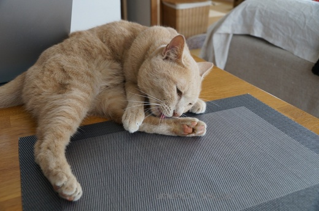
なんだか美味しそうだよね〜
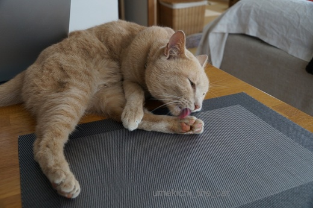
肉球も愛おしげにお手入れ。

わ〜！白目になってますよ〜！！
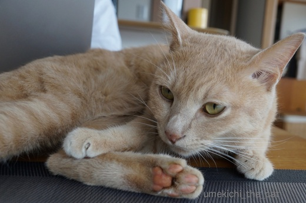
おひるねたいむやな。

先日はエアコンを初稼働。店先には水ナス、鮎、鱧が並び始めました。夏！夏！
梅吉の寝場所も毛布の上からテーブル、キッチンカウンターの上、フローリングに変わり始めました。
そして何と言っても夏は白目の季節！
暑くなると梅吉の白目率がぐんと上昇します。
白目好きの皆様どうぞお楽しみに〜＾＾
梅吉写真ライブラリー [梅吉]
「ハートフル」をキーワードに梅吉の写真ライブラリーを見返しました。
う〜〜〜〜ん・・・・・・目につくのは


何かにかじりついている、もしくは、かじり付こうとしている写真や


恐ろしげな顔でおもちゃと格闘する写真や
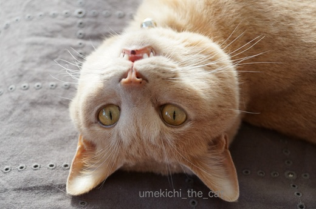
（仰向けなんです）
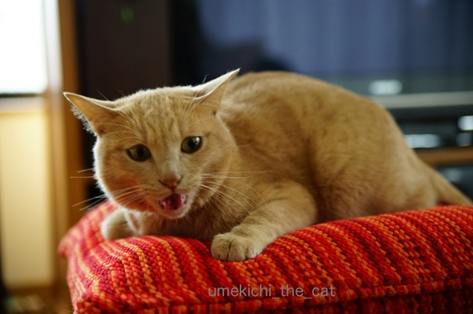
ブラシを拒否して怒っている写真とか
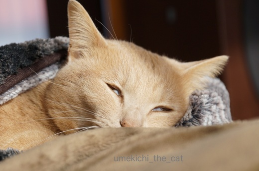

白目気味に寝ている写真とか・・・・・そんなんばっかりなんですよ( ･̆ˍ･̆ )
でも、昨日猫の浮世絵を見に行ったのですが書かれている猫みんな結構怖い顔。
現代の写真の様に過度の可愛さを求めたものよりも
「日常の猫ってこんな顔してるよね」と好印象でした。
梅吉がそうだからと肩入れした感想かも知れませんけれどね＾＾
梅吉さんの写真はこのままで良いってことですよね？梅吉さん。
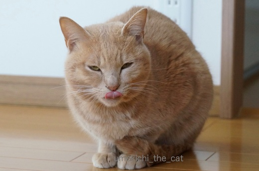
せやで。
最後は悪顔で〆てもらいました。
↑ガブッと一押し↑
う〜〜〜〜ん・・・・・・目につくのは


何かにかじりついている、もしくは、かじり付こうとしている写真や


恐ろしげな顔でおもちゃと格闘する写真や
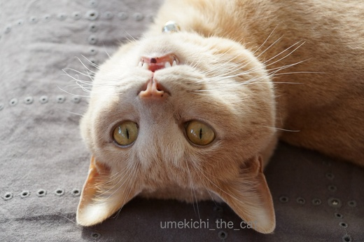
（仰向けなんです）
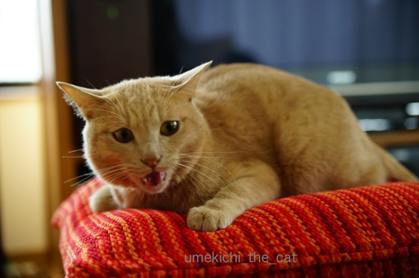
ブラシを拒否して怒っている写真とか
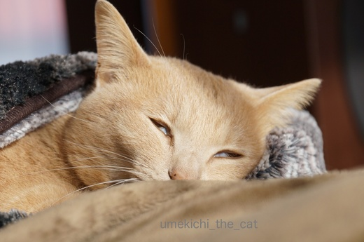

白目気味に寝ている写真とか・・・・・そんなんばっかりなんですよ( ･̆ˍ･̆ )
でも、昨日猫の浮世絵を見に行ったのですが書かれている猫みんな結構怖い顔。
現代の写真の様に過度の可愛さを求めたものよりも
「日常の猫ってこんな顔してるよね」と好印象でした。
梅吉がそうだからと肩入れした感想かも知れませんけれどね＾＾
梅吉さんの写真はこのままで良いってことですよね？梅吉さん。
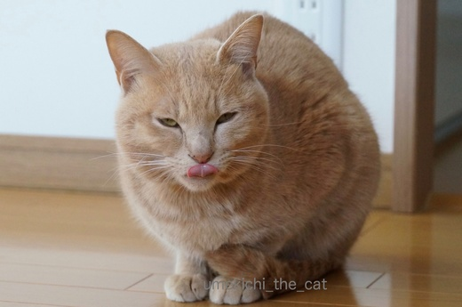
最後は悪顔で〆てもらいました。
トイレにゆっくり入りたい・・・ [梅吉]
猫飼いの皆さんは夜中、早朝とにゃんこに起こされて
ゆっくり寝ていられない方がほとんどだと思いますが
我が家はゆっくりトイレにも入っていられません( ；∀；)
トイレに入るとドアの外で聞こえる梅吉のぎゃん鳴き。
鳴くぐらいならほっといてもいいじゃない、と思われるかも知れませんが
無視しているとドアにどっかんどっかん飛びついてきます ∞（エンドレス）
こ、壊れる〜
しょうがないので一人の時はドアを開けてトレイに入ってます！
（おお！カミングアウト！！）
で、あまりのうるささにドアを開けてみると影からのぞくカフェオレ・・・・

きゅるんっ

わし、ずっとここにいてたんやで。きづいてた？
（あんだけ鳴いたら外の人も気づくわっ![[むかっ（怒り）]](https://blog.ss-blog.jp/_images_e/152.gif) ）
）

なあなあ、なんかおもしろいことしてや

まちくたびれるわ〜

はよう、いうてるやんか〜（ガリガリガリガリ・・・・
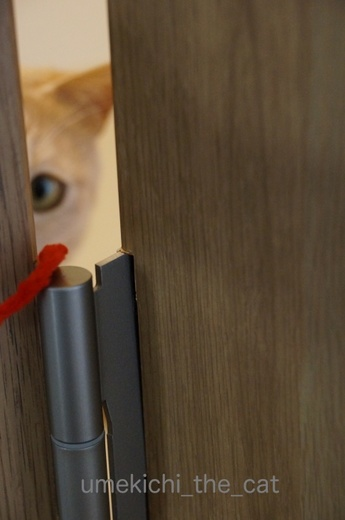
おっ！！

これや〜、これをまってたんや〜
モール必携。もちろんいつでも遊んでいただくためです。
一人じゃない時はもちろんトイレのドアは閉めますがその時は梅吉も一緒に中へ。
落ち着かないわ〜。
↑ガブッと一押し↑
ゆっくり寝ていられない方がほとんどだと思いますが
我が家はゆっくりトイレにも入っていられません( ；∀；)
トイレに入るとドアの外で聞こえる梅吉のぎゃん鳴き。
鳴くぐらいならほっといてもいいじゃない、と思われるかも知れませんが
無視しているとドアにどっかんどっかん飛びついてきます ∞（エンドレス）
こ、壊れる〜
しょうがないので一人の時はドアを開けてトレイに入ってます！
（おお！カミングアウト！！）
で、あまりのうるささにドアを開けてみると影からのぞくカフェオレ・・・・

きゅるんっ

（あんだけ鳴いたら外の人も気づくわっ


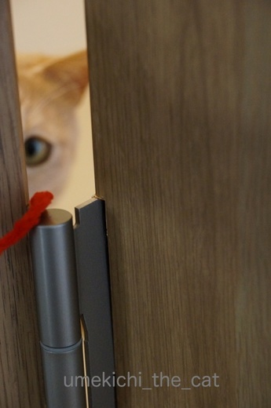

モール必携。もちろんいつでも遊んでいただくためです。
一人じゃない時はもちろんトイレのドアは閉めますがその時は梅吉も一緒に中へ。
落ち着かないわ〜。
拭き掃除が好き！ [梅吉]
・・・・ってもちろん私ではありません。

フローリングを水拭きしていると必ず走ってやってくる梅吉さん。

拭いたばかりのまだちょっと湿っているところに
ずさささささーっとスライディング。
フローリングに湿り気があるから真新しい肉球印がくっきりてんてんと・・・ああ(꒦ິ⌑꒦ີ)

自分の足が濡れているとスライディングはさらに激しくなり興奮して転げ回ります。
足、洗面所でわざと濡らしてくるんですよ〜。
せっかく拭いたフローリングは濡れた足でびしょびしょです・・・ああ(꒦ິ⌑꒦ີ)

ぶるるんっと身震いをしてたくさん毛を落としてくれました。
湿ったフローリングに抜け毛・・・また拭き直しです・・・うわ〜ん(꒦ິ⌑꒦ີ)
窓拭き、床拭きキライです。
暑くなってきたら汗だくだくの作業になるので尚更です。
でも梅吉さんはせっせと汚しておかーさんが掃除しなければならない様に仕向けるのでした。
雨の日はアンニュイに [梅吉]
昨日、一昨日と大阪は雨が降ったりどんよりと曇ったり。
湿度が高くて不快なお天気が続きました。
湿気が苦手な札幌生まれ、札幌育ちの私・・・ツライ。
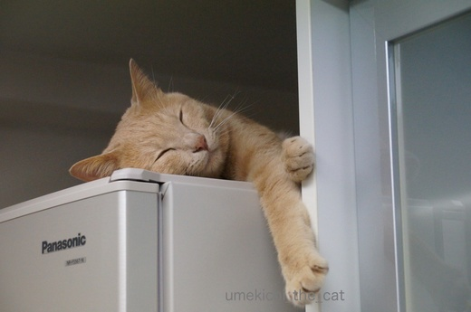
梅吉も冷蔵庫の上に引きこもっていつもの様に活発に動き回りません。

梅吉さんどうしたんですか？お加減でも悪いとか・・・
でも夜中に２回もおかーさんを起こして「おやつー！」とか
「なでてー！」とか元気いっぱい催促していましたよね。
いつまでも引きこもってないで遊びませんか？
ほらほら巨大猫じゃらし〜
（お掃除用のハンディワイパーです。そろそろ交換時期なの。
きちゃないのは気にせんといて！）

キロリ

あ、釣れました(ﾉ≧▽≦)ﾉ

いったん遊びモードに入ったら興味津々巨大じゃらしを目で追います。
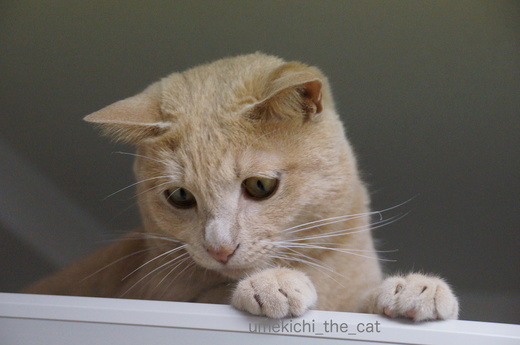
お耳の角度がわくわくを隠せませんね。

じ〜〜〜〜〜〜っ

爪がにょき〜ん。
エンジン全開となった様です。
幼い頃は暑い寒い乾燥湿気、全く関係なく走り回っていたのですが
最近は不快な日、雨の日はだら〜んとしていることが多くなって来ました。
これも大人になった証なのですよね。
もちろんアホみたいに走り回る梅吉も健在ですww
↑ガブッと一押し↑
湿度が高くて不快なお天気が続きました。
湿気が苦手な札幌生まれ、札幌育ちの私・・・ツライ。
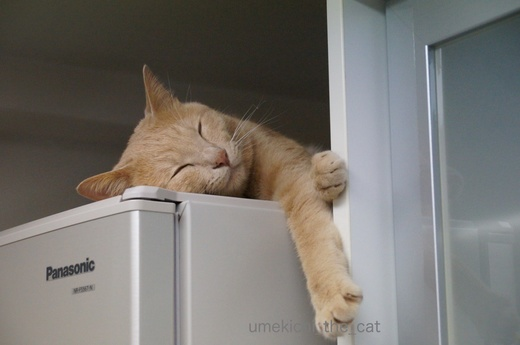
梅吉も冷蔵庫の上に引きこもっていつもの様に活発に動き回りません。

梅吉さんどうしたんですか？お加減でも悪いとか・・・
でも夜中に２回もおかーさんを起こして「おやつー！」とか
「なでてー！」とか元気いっぱい催促していましたよね。
いつまでも引きこもってないで遊びませんか？
ほらほら巨大猫じゃらし〜
（お掃除用のハンディワイパーです。そろそろ交換時期なの。
きちゃないのは気にせんといて！）


あ、釣れました(ﾉ≧▽≦)ﾉ

いったん遊びモードに入ったら興味津々巨大じゃらしを目で追います。
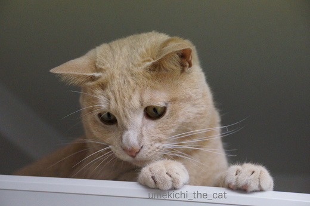
お耳の角度がわくわくを隠せませんね。


爪がにょき〜ん。
エンジン全開となった様です。
幼い頃は暑い寒い乾燥湿気、全く関係なく走り回っていたのですが
最近は不快な日、雨の日はだら〜んとしていることが多くなって来ました。
これも大人になった証なのですよね。
もちろんアホみたいに走り回る梅吉も健在ですww

カフェオレ色の梅吉

梅吉 2023年8月10日 永眠


梅吉と出会った譲渡会

犬猫の理由なき殺処分ゼロ
妄想広告
UMEKICHI 光

爆発的に早い！
時々攻撃的！
Thanks to Mr.Boss365
爆発的に早い！
時々攻撃的！
Thanks to Mr.Boss365